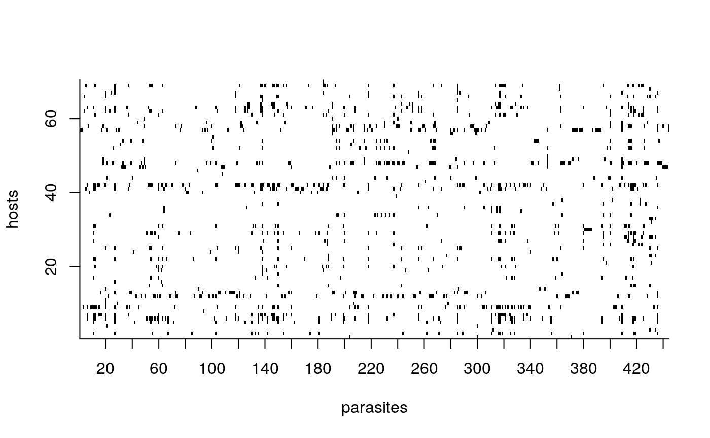
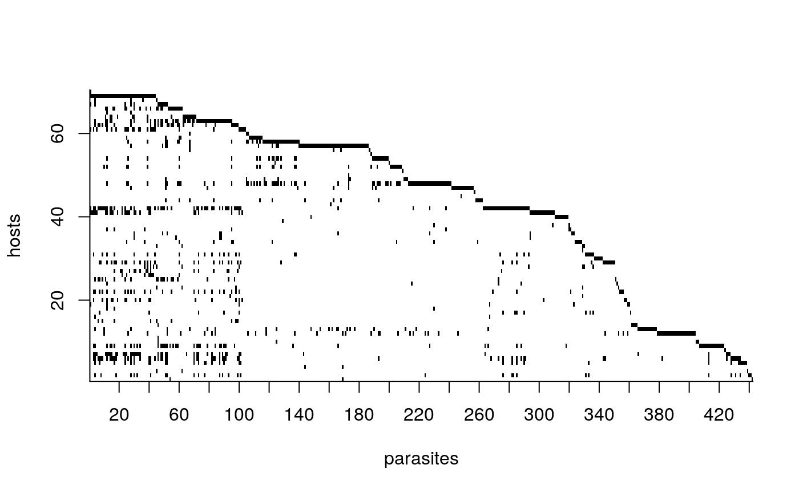
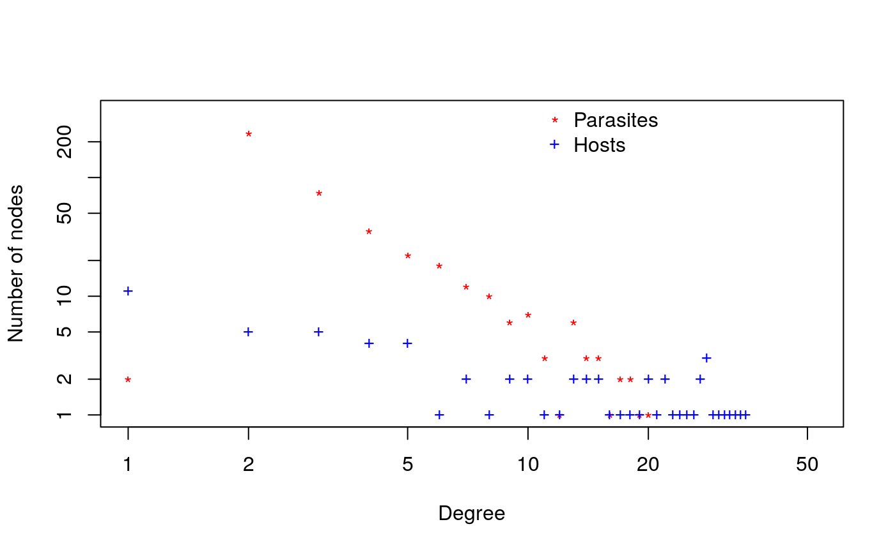
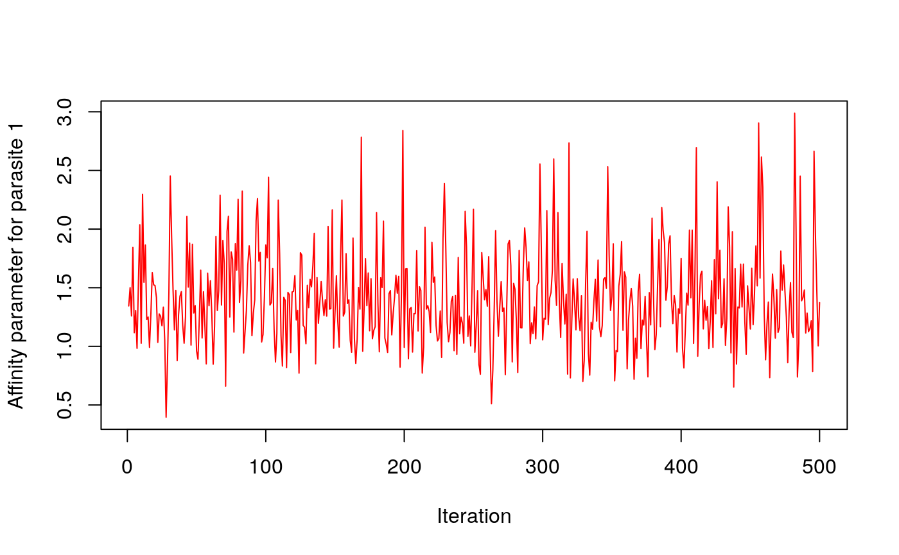
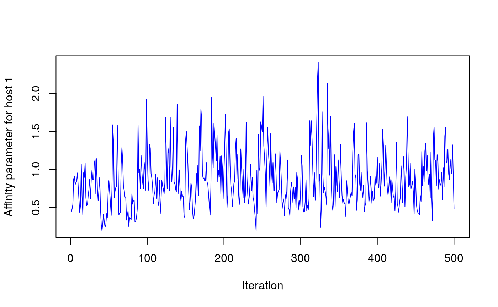
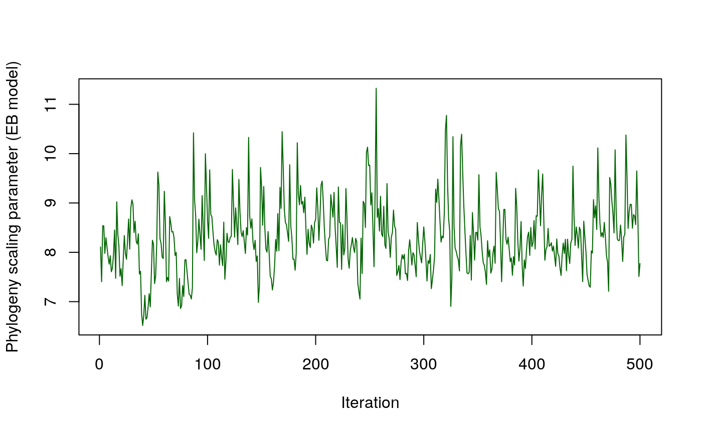
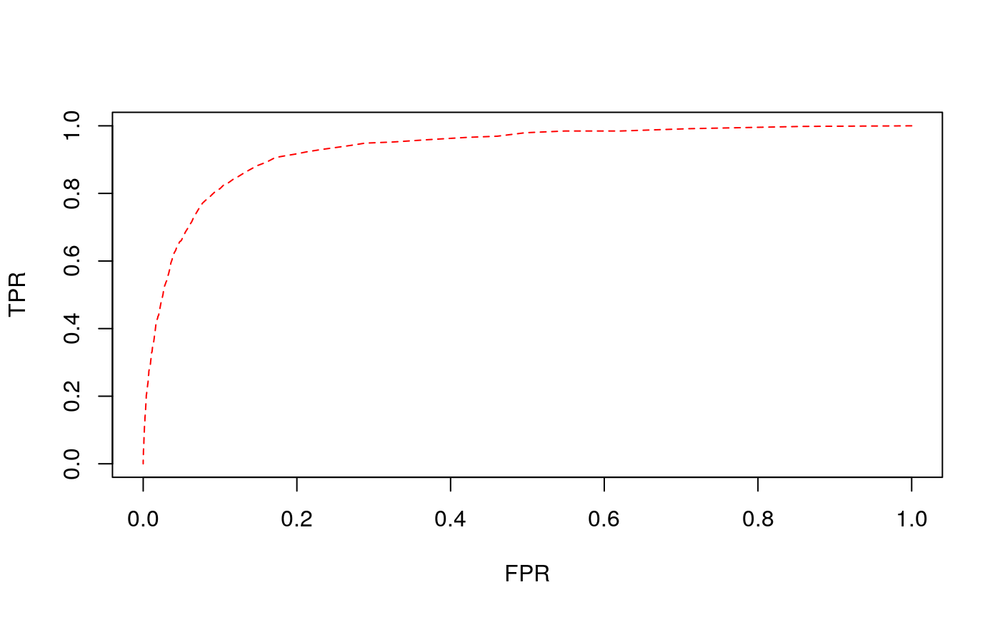
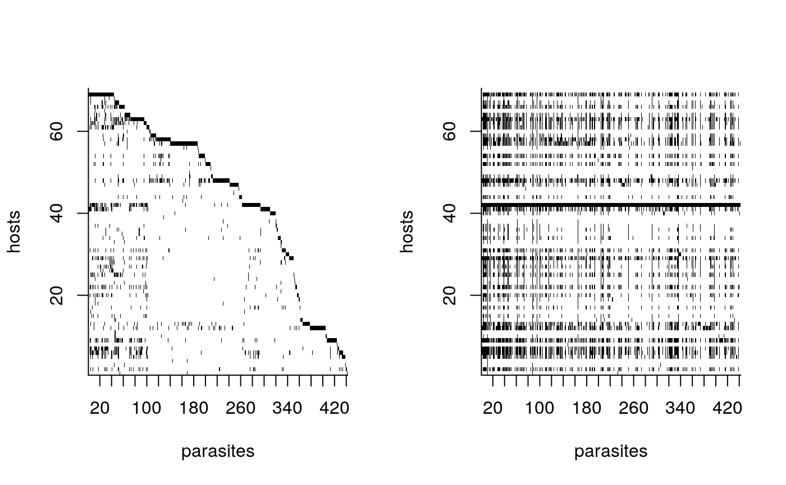
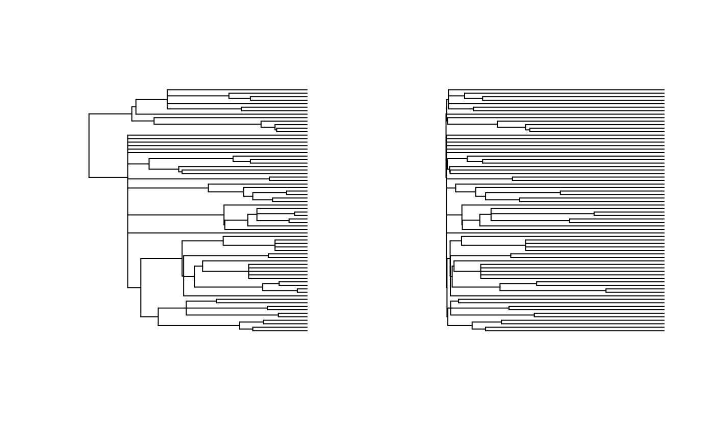

vignettes/HPprediction.Rmd
HPprediction.RmdTo begin we will use a subsection of the GMPD 2.0 and the associated Mammal supertree updated by Fritz et al. 2009
data(gmpd)
data(mammal_supertree)
# Removing parasites not reported to species
gmpd <- gmpd[grep("sp[.]",gmpd$ParasiteCorrectedName, invert=TRUE),]
gmpd <- gmpd[grep("not identified",gmpd$ParasiteCorrectedName, invert=TRUE),]
# Subsetting host family Bovidae
gmpd <- gmpd[gmpd$HostFamily=="Bovidae",]
# Formatting host names to match phylogeny
gmpd$HostCorrectedName <- gsub(" ","_", gmpd$HostCorrectedName)
# Creating binary interaction matrix
com <- table(gmpd$HostCorrectedName, gmpd$ParasiteCorrectedName)
com[com>1] <- 1
com <- as.matrix(unclass(com), nrow=nrow(com), ncol=ncol(com))
# loading phylogeny and pruning to hosts in the interaction matrix
mammal_supertree <- drop.tip(mammal_supertree, mammal_supertree$tip.label[!mammal_supertree$tip.label%in%rownames(com)])
# merge the tree and interaction matrix
cleaned <- network_clean(com, mammal_supertree, 'full')
#> Warning: not all rows in Z exist tree; missing are removed from Z!
#> [1] "Z has empty columns - these have been removed!"
#> [1] "ordering the rows of Z to match tree..."
#> [1] "normalizing tree edges by the maximum pairwise distance!"
com <- cleaned$Z # cleaned binary interaction matrix
tree <- cleaned$tree # cleaned treeTo visualize the structure of the input interaction matrix we can use two built-in plotting functions.

We can also use the function lof to left order the interaction matrix before plotting:

Another interesting property of networks to explore is the degree distribution. We can look at the degree distribution for both hosts and parasites with the following function:

Running for 1500 slices (iterations) on an i7-6560U and 16GB RAM took about 25 seconds.
out <- network_est(Z = com, tree = tree, slices = 1000, model.type = 'full')
#> [1] "Running full model..."
#> [1] "Run for 1000 slices with 500 burn-ins"
#> [1] "Matrix dimension: 70 x 442"
#> [1] "slice: 200, at 2020-04-24 14:01:47"
#> [1] "slice: 400, at 2020-04-24 14:01:51"
#> [1] "slice: 600, at 2020-04-24 14:01:55"
#> [1] "slice: 800, at 2020-04-24 14:01:59"
#> [1] "slice: 1000, at 2020-04-24 14:02:02"
#> [1] "Done!"
str(out)
#> List of 3
#> $ param:List of 6
#> ..$ w : num [1:442, 1:500] 1.57 1.6 1.75 1.7 1.96 ...
#> ..$ y : num [1:70, 1:500] 0.261 6.599 0.579 1.724 3.355 ...
#> ..$ eta : num [1:500] 7.11 7.17 6.63 6.65 7.13 ...
#> ..$ g : NULL
#> ..$ burn.in: num 500
#> ..$ sd :List of 3
#> .. ..$ w : num [1:442] 2.1 2.03 2.11 2.05 2.04 ...
#> .. ..$ y : num [1:70] 1.09 5.12 1.75 2.6 3.78 ...
#> .. ..$ eta: num 0.681
#> $ Z : num [1:70, 1:442] 0 0 0 0 0 0 0 0 0 0 ...
#> ..- attr(*, "dimnames")=List of 2
#> .. ..$ : chr [1:70] "Addax_nasomaculatus" "Oryx_gazella" "Hippotragus_equinus" "Hippotragus_niger" ...
#> .. ..$ : chr [1:442] "Acinetobacter lwoffii" "Actinobacillus actinomycetemcomitans" "Africanostrongylus buceros" "Agriostomum cursoni" ...
#> $ tree :List of 4
#> ..$ edge : int [1:118, 1:2] 71 72 73 74 75 76 76 75 77 77 ...
#> ..$ edge.length: num [1:118] 0.1774 0.0604 0.0792 0.3736 0.0604 ...
#> ..$ Nnode : int 49
#> ..$ tip.label : chr [1:70] "Addax_nasomaculatus" "Oryx_gazella" "Hippotragus_equinus" "Hippotragus_niger" ...
#> ..- attr(*, "class")= chr "phylo"
#> ..- attr(*, "order")= chr "cladewise"# Affinity parameter of parasite 1
plot(out$param$w[1,],type="l", col=2, ylab="Affinity parameter for parasite 1", xlab="Iteration")
# Affinity parameter of host 1
plot(out$param$y[1,],type="l", col=4, ylab="Affinity parameter for host 1", xlab="Iteration")
# Phylogeny scaling parameter
plot(out$param$eta, type="l",col="darkgreen", ylab="Phylogeny scaling parameter (EB model)", xlab="Iteration")
topPairs(P, out$Z)
#> Hosts Parasites
#> 28449 Aepyceros_melampus Toxoplasma gondii
#> 22003 Rupicapra_rupicapra Rhipicephalus evertsi
#> 19763 Rupicapra_rupicapra Pestivirus Bovine viral diarrhea virus 1
#> 27819 Aepyceros_melampus Teladorsagia circumcincta
#> 29073 Rupicapra_rupicapra Trichostrongylus falculatus
#> 16409 Aepyceros_melampus Nematodirus spathiger
#> 1843 Rupicapra_rupicapra Bacillus anthracis
#> 10383 Rupicapra_rupicapra Impalaia tuberculata
#> 28835 Tragelaphus_strepsiceros Trichostrongylus axei
#> 28975 Tragelaphus_strepsiceros Trichostrongylus colubriformis
#> p
#> 28449 0.4929885
#> 22003 0.4886306
#> 19763 0.4633080
#> 27819 0.4617923
#> 29073 0.4591450
#> 16409 0.4399789
#> 1843 0.4313757
#> 10383 0.4274391
#> 28835 0.4243908
#> 28975 0.4088494## General variables
MODEL = 'full' # full, distance or affinity
SLICE = 1000 # no of iterations
NO.CORES = 3 # maximum cores to use
COUNT = TRUE # TRUE = count data, FALSE = year of first pub.
ALPHA.ROWS = 0.3 # hyperparameter for prior over rows affinity, effective under affinity and full models only
ALPHA.COLS = 0.3 # hyperparameter for prior over columns affinity, effective under affinity and full models only
## Loading required packages
require(parallel)
## preparing tree and com
cleaned <- network_clean(com, tree, 'full')
com <- cleaned$Z # cleaned binary interaction matrix
tree <- cleaned$tree # cleaned tree
## indexing 5-folds of interactions
folds <- cross.validate.fold(com, n= 5, min.per.col=2)
[1] "Actual cross-validation rate is 0.095"
[2] "Actual cross-validation rate is 0.095"
[3] "Actual cross-validation rate is 0.095"
[4] "Actual cross-validation rate is 0.095"
[5] "Actual cross-validation rate is 0.096"
# returns a matrix of 3 columns (row, col, group), (row, col) correspond to Z, group to the CV group
tot.gr <- length(unique(folds[,'gr'])) # total number of CV groups
## A loop to run over all CV groups
res <- mclapply(1:tot.gr, function(x, folds, Z, tree, slice, model.type, ALPHA.ROWS, ALPHA.COLS){
## Analysis for a single fold
Z.train = Z
Z.train[folds[which(folds[,'gr']==x),c('row', 'col')]]<-0
## running the model of interest
obj = network_est(Z.train, slices=slice, tree=tree, model.type=model.type,
a_y = ALPHA.ROWS, a_w = ALPHA.COLS)
P = sample_parameter(obj$param, model.type, Z.train, tree)
Eta = if(is.null(obj$param$eta)) 0 else mean(obj$param$eta)
## order the rows in Z.test as in Z.train
roc = rocCurves(Z, Z.train, P, plot=FALSE, bins=400, all=FALSE)
tb = ana.table(Z, Z.train, P, roc, plot=FALSE)
roc.all = rocCurves(Z, Z.train, P=P, plot=FALSE, bins=400, all=TRUE)
tb.all = ana.table(Z, Z.train, P, roc.all, plot=FALSE)
list(param=list(P=P, Eta = Eta), tb = tb,
tb.all = tb.all, FPR.all = roc.all$roc$FPR,
TPR.all=roc.all$roc$TPR, FPR = roc$roc$FPR, TPR=roc$roc$TPR)
},
folds=folds, Z = com, tree=tree, model.type=MODEL, slice = SLICE,
ALPHA.ROWS = ALPHA.ROWS, ALPHA.COLS= ALPHA.COLS,
mc.preschedule = TRUE, mc.cores = min(tot.gr, NO.CORES))
[1] "Running full model..."
[1] "Running full model..."
[1][1] "Running full model..."
"Run for 1000 slices with 500 burn-ins"
[1] "Matrix dimension: 70 x 442"
[1] "Run for 1000 slices with 500 burn-ins"
[1] "Matrix dimension: 70 x 442"
[1] "Run for 1000 slices with 500 burn-ins"
[1] "Matrix dimension: 70 x 442"
[1] "slice: 200, at 2020-04-18 18:08:37"
[1] "slice: 200, at 2020-04-18 18:08:37"
[1] "slice: 200, at 2020-04-18 18:08:37"
[1] "slice: 400, at 2020-04-18 18:08:41"
[1] "slice: 400, at 2020-04-18 18:08:41"
[1] "slice: 400, at 2020-04-18 18:08:41"
[1] "slice: 600, at 2020-04-18 18:08:45"
[1] "slice: 600, at 2020-04-18 18:08:45"
[1] "slice: 600, at 2020-04-18 18:08:45"
[1] "slice: 800, at 2020-04-18 18:08:51"
[1] "slice: 800, at 2020-04-18 18:08:51"
[1] "slice: 800, at 2020-04-18 18:08:51"
[1] "slice: 1000, at 2020-04-18 18:08:57"
[1] "Done!"
[1] "slice: 1000, at 2020-04-18 18:08:57"
[1] "Done!"
[1] "slice: 1000, at 2020-04-18 18:08:58"
[1] "Done!"
[1] "Running full model..."
[1] "Run for 1000 slices with 500 burn-ins"
[1] "Matrix dimension: 70 x 442"
[1] "Running full model..."
[1] "Run for 1000 slices with 500 burn-ins"
[1] "Matrix dimension: 70 x 442"
[1] "slice: 200, at 2020-04-18 18:09:07"
[1] "slice: 200, at 2020-04-18 18:09:07"
[1] "slice: 400, at 2020-04-18 18:09:12"
[1] "slice: 400, at 2020-04-18 18:09:12"
[1] "slice: 600, at 2020-04-18 18:09:18"
[1] "slice: 600, at 2020-04-18 18:09:19"
[1] "slice: 800, at 2020-04-18 18:09:25"
[1] "slice: 800, at 2020-04-18 18:09:26"
[1] "slice: 1000, at 2020-04-18 18:09:32"
[1] "Done!"
[1] "slice: 1000, at 2020-04-18 18:09:32"
[1] "Done!"We can analyze the performance of the model via the area under the receiver operating characteristic curve (AUC), and the proportion of 1s in the original data successfully recovered.
#> Loading required package: parallel#> m.auc m.pred.held.out.ones m.thresh m.hold.out
#> 1 0.9249 87.17949 0.04260652 117
#> 2 0.9211 88.03419 0.05263158 117
#> 3 0.9380 90.59829 0.04511278 117
#> 4 0.9258 84.61538 0.05764411 117
#> 5 0.9445 92.37288 0.04761905 118
#> [1] "Model: full, AUC: 0.930860 and percent 1 recovered from held out: 88.560046"
We can also construct the posterior probability matrix ‘P’ as the average across each fold, and look at the top undocumented interactions.
## Constructing the P probability matrix from CV results
P = matrix(rowMeans(sapply(res, function(r) r$param$P)),
nrow = nrow(com), ncol = ncol(com))
## left ordering of interaction and probability matrix
indices = lof(com, indices = TRUE)
com = com[, indices]
P = P[, indices]
rownames(P)<-rownames(com)
colnames(P)<-colnames(com)
## view top undocumented interactions
topPairs(P,1*(com>0),topX=10)
#> Hosts Parasites
#> 2053 Rupicapra_rupicapra Rhipicephalus evertsi
#> 3529 Aepyceros_melampus Toxoplasma gondii
#> 2823 Rupicapra_rupicapra Trichostrongylus falculatus
#> 4159 Aepyceros_melampus Teladorsagia circumcincta
#> 1913 Rupicapra_rupicapra Pestivirus Bovine viral diarrhea virus 1
#> 1709 Aepyceros_melampus Nematodirus spathiger
#> 233 Rupicapra_rupicapra Bacillus anthracis
#> 1143 Rupicapra_rupicapra Impalaia tuberculata
#> 2725 Tragelaphus_strepsiceros Trichostrongylus axei
#> 6645 Tragelaphus_strepsiceros Trichostrongylus colubriformis
#> p
#> 2053 0.4775287
#> 3529 0.4562461
#> 2823 0.4515121
#> 4159 0.4496634
#> 1913 0.4429673
#> 1709 0.4394255
#> 233 0.4210100
#> 1143 0.4160180
#> 2725 0.4133397
#> 6645 0.3945742We can also compare the input matrix to the posterior interaction matrix, and the orginal phylogeny compared to the phylogeny with estimated EB scaling.
par(mfrow=c(1,2))
## printing input Z
plot_Z(com, tickMarks=20)
## printing posterior interaction matrix
plot_Z(1*(P > mean(sapply(res, function(r) r$tb$thres))), tickMarks=20)
## printing input tree
plot(tree, show.tip.label=FALSE)
## printing output tree
if(grepl('(full|dist)', MODEL)){
Eta = mean(sapply(res, function(r) r$param$Eta))
print(paste('Eta is', Eta))
plot(rescale(tree, 'EB', Eta), show.tip.label=FALSE)
}
#> [1] "Eta is 6.83615118463669"
Elmasri, M., Farrell, M. J., Davies, T. J., & Stephens, D. A. (2020). A hierarchical Bayesian model for predicting ecological interactions using scaled evolutionary relationships. Annals of Applied Statistics, 14(1), 221-240.